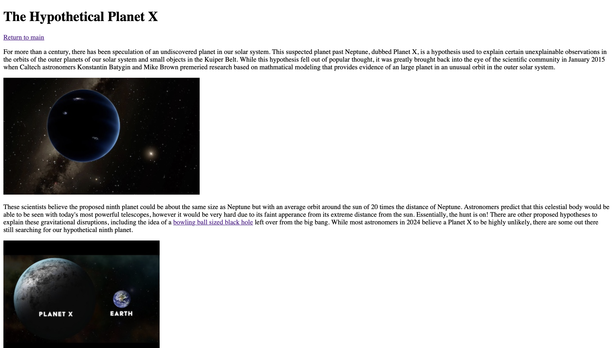

Assignment 1
This assignment goes over the basics of HTML tags and formatting.
In this course, I will design a website by using HTML and CSS for the front end apperance and JavaScript for functionality. Additionally, I will use node and server side JavaScript.
This assignment goes over the basics of HTML tags and formatting.
This assignment covered essential basic CSS styling and more HTML basics.
This assignment introduced Flexbox display and page layouts.

In this assignment I recreated a page from USC's website from scratch as practice.
This was my first assignment in JavaScript, in which I tested out three different JavaScript functions.
In this assignment I learned how to use JavaScript if statements and conditionals.
This assignment was my first use of loops, in which I used a for loop to print a certain number of stars within an area.
This assignment introduced arrays by having me load images and their descriptions into the webpage using an associative array.
In this assignment, I first used JavaScript classes to store most of the document's content.
This was my first assignment using JSON, where I utilized it to import data into a list.
This file explains my plan for my project and outlines its general goals.
This is my first prototype of my site with a general outline of what to come.
At this point, I added color and some images and text to start filling up my website.
This was the final version of my project where I fixed previous issues and made all last changes.
In this submission, I reworked part of my site to utilize JSON, storing all of the example dishes.